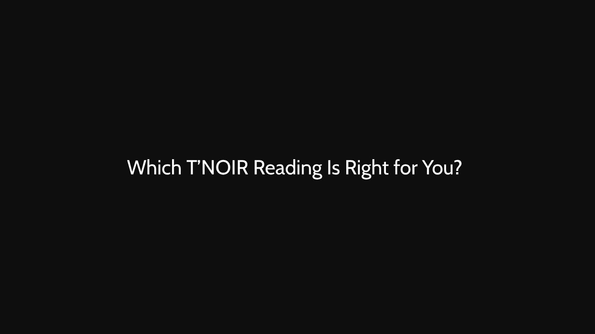

Which T’NOIR Reading Is Right for You?
Three approaches to tarot. Three different levels of perspective. One starting point: understanding what you need.

Not every question requires the same kind of reading.
Sometimes, you already know what you want to ask. You do not need to examine every detail or explore every possible angle. You simply need a focused interpretation that brings your attention back to what matters.
Other situations are more complicated. Several factors may be influencing what is happening, and the question itself may only reveal a small part of the bigger picture.
And sometimes, your attention is not on a single moment at all. You are thinking about the months ahead, the decisions you may need to make, and the direction you want to take.
At T’NOIR TAROT, these different needs are reflected in three distinct reading experiences: SINGLE INSIGHT, DEEP-DIVE ANALYSIS, and STRATEGIC ROADMAP.
Each is designed with a different purpose in mind. Understanding those differences can help you choose a reading that fits your situation, your questions, and the perspective you are looking for.
01 — SINGLE INSIGHT
One question. One focused pull. For when you already know what you’re really asking and just need it said plainly.
Clarity does not always require a long analysis. Sometimes, the most useful place to begin is with one specific question — the thought that keeps returning to your mind, the concern you have already identified, or the decision you are trying to understand more clearly.
SINGLE INSIGHT is designed for that moment. This reading focuses on one central question and provides a concentrated interpretation around it. Rather than expanding into every aspect of your situation, it keeps the attention on the issue you have chosen to explore.
The intention is simple: give one question the space it deserves.
When is SINGLE INSIGHT the right choice?
Consider this reading when you have one clear question in mind, want to explore a specific concern without examining an entire situation, prefer a focused interpretation over a broader analysis, or want a starting point for reflection before deciding whether you need to explore anything further.
For example, you may be considering whether to pursue an opportunity, wondering what you should pay attention to in a particular situation, or trying to understand your own perspective on a decision.
The goal is not to remove every uncertainty. It is to give you a focused perspective that you can consider alongside your own judgment and circumstances.
SINGLE INSIGHT is for the question you already know you need to ask.
02 — DEEP-DIVE ANALYSIS
A full spread across the whole situation. What's driving it, what's hidden, and where it's realistically heading.
Some questions cannot be understood properly when viewed in isolation. A relationship may be affected by communication, expectations, personal boundaries, and circumstances that neither person has fully addressed. A career decision may involve competing priorities, uncertainty, and considerations that extend beyond the immediate opportunity.
In situations like these, the central question is only the beginning. DEEP-DIVE ANALYSIS takes a broader approach, using a full tarot spread to explore different dimensions of the situation. The interpretation considers what may be influencing the circumstances, what deserves closer attention, and what possible direction the situation could take based on the themes revealed in the reading.
Instead of focusing exclusively on one point, this reading examines how different elements may relate to one another.
What does a deeper analysis explore?
Depending on your question, the reading may examine three broad areas.
What's driving the situation? Explore the circumstances, recurring themes, motivations, or dynamics that may be relevant to what you are experiencing. This is an opportunity to consider the situation beyond its most visible details.
What's hidden or being overlooked? Look at perspectives, tensions, assumptions, or considerations that may deserve more attention. This does not mean that the cards can establish secret facts or reveal another person's private thoughts with certainty. Rather, the interpretation can help you reflect on what you may not have considered.
Where could things realistically be heading? Consider possible directions suggested by the reading in the context of the situation you describe. These are possibilities for reflection, not guaranteed predictions. Your circumstances, the decisions of everyone involved, and future actions can all affect how events unfold.
When is DEEP-DIVE ANALYSIS the right choice?
Consider this reading when your situation has several interconnected elements, you want to understand the broader context rather than focus on one question, you feel that something needs closer examination but are unsure where to begin, or you want to reflect on possible directions before deciding what to do next.
DEEP-DIVE ANALYSIS is particularly suited to questions where the surrounding context matters as much as the question itself.
DEEP-DIVE ANALYSIS is for when you need to understand more than the surface.
03 — STRATEGIC ROADMAP
A longer-range reading built to guide decisions over the months ahead. With written takeaways to return to.
Some questions are not limited to what is happening right now. You may be preparing for a new chapter, weighing several important decisions, or thinking about the direction you want your life or work to take over the coming months.
In these situations, a single moment of clarity may not be enough. You may want a broader perspective that you can revisit as your circumstances change and new decisions emerge.
STRATEGIC ROADMAP is designed around that longer-range perspective. This reading explores the themes, considerations, and possible directions relevant to the months ahead. It is intended to support reflection around your decisions, helping you think about what matters, what challenges may deserve attention, and which questions you may want to keep in mind as you move forward.
Unlike a reading intended only for immediate clarity, STRATEGIC ROADMAP also includes written takeaways that you can return to after the session.
The written component gives you something tangible to revisit — a reference for reflection when you are reviewing your priorities or approaching a decision.
What makes STRATEGIC ROADMAP different?
A wider time horizon. The focus extends beyond a single immediate concern to the broader direction you are considering over the coming months.
Decision-oriented reflection. The interpretation is structured around the questions, priorities, and considerations that may help you evaluate your options. It does not make decisions for you or guarantee which choice will succeed.
Written takeaways to revisit. Your reading includes written points you can return to later. These can serve as reminders of the perspectives explored and the considerations you wanted to keep in view.
When is STRATEGIC ROADMAP the right choice?
Consider this reading when you are thinking about a longer-term direction, you have several decisions approaching over the coming months, you want a broader perspective rather than an answer limited to the present moment, or you value written takeaways that you can revisit as you reflect on your choices.
This format is intended for people who want to engage with their questions beyond the moment of the reading itself.
A roadmap does not remove uncertainty or determine the future. It gives you a structured perspective to consider while you make your own decisions.
STRATEGIC ROADMAP is for when the months ahead matter as much as the present.
Three readings. Three different purposes.
Although all three services use tarot as a tool for reflection, they are not interchangeable. The difference lies in the scope of the question and the kind of perspective you want to explore.
Choose SINGLE INSIGHT if you need focus. You have one central question and want a concentrated interpretation. You do not need to explore the entire situation to begin reflecting on what matters.
Choose DEEP-DIVE ANALYSIS if you need context. Your situation has several layers, and you want to examine the dynamics, considerations, and possible directions surrounding it.
Choose STRATEGIC ROADMAP if you need a longer-range perspective. You are thinking about decisions over the coming months and want a broader reading with written takeaways to return to.
There is no universal rule that makes one reading better than another. A more extensive reading is not automatically the right choice, just as a focused reading is not necessarily insufficient.
The right choice depends on the question you bring to the table.
Before you choose, ask yourself three things
If you are still uncertain, take a moment to consider the following.
1. What am I actually trying to understand? Start with the central concern behind your question. Is it one specific issue, a complicated situation, or a broader direction you are considering?
2. How much of the situation do I want to explore? If one question captures what matters most, a focused reading may be enough. If the context is complex or several elements influence one another, a deeper analysis may be more suitable.
3. Will I need to revisit this perspective later? If your focus is on the months ahead and you want written takeaways to refer back to, STRATEGIC ROADMAP may better fit your needs.
You do not need to have every detail figured out before booking. Having a reasonable sense of what you want to explore is a useful place to start.
A note on what tarot can and cannot offer
At T’NOIR TAROT, a reading is an opportunity to explore perspectives, reflect on circumstances, and consider questions from a different angle.
It is not a guarantee of a particular outcome, a substitute for your own judgment, or a replacement for qualified professional advice when a situation requires it.
The cards do not make your decisions for you. They do not establish facts about another person's private thoughts, and they cannot guarantee what will happen in the future.
What matters is how you engage with the interpretation: what resonates, what prompts further thought, and what helps you approach your circumstances with greater awareness.
The purpose is not to tell you what you must do. It is to give you a perspective you can examine for yourself.
Your question comes first
You do not need the most extensive reading available. You need the reading that makes sense for what you want to explore.
Choose SINGLE INSIGHT for one focused question. Choose DEEP-DIVE ANALYSIS when you want to examine the wider situation. Choose STRATEGIC ROADMAP when your attention is on decisions and the months ahead.
Each reading begins with a different scope, but the intention remains consistent: to create space for thoughtful interpretation and personal reflection.
When you are ready, explore the available readings and choose the one that fits your needs through the T’NOIR TAROT website.
Your story. Your perspective.